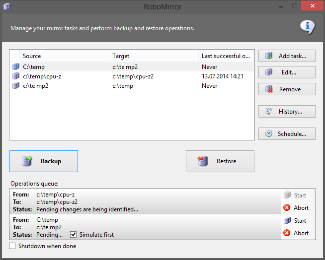
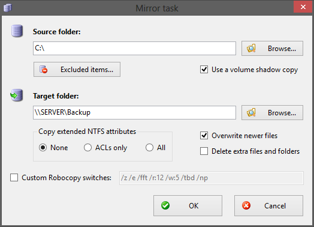
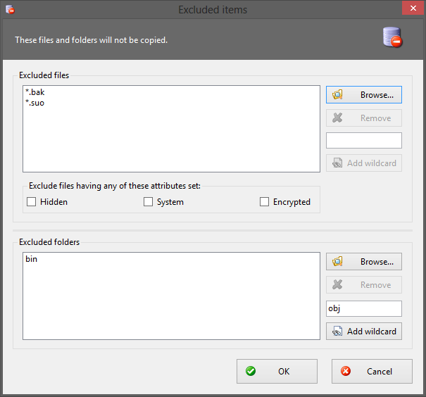
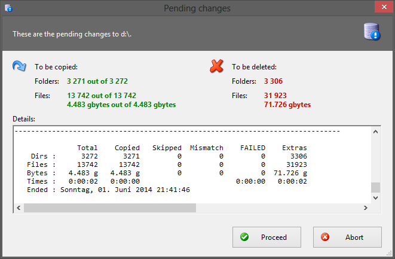
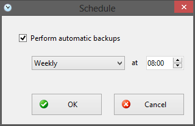
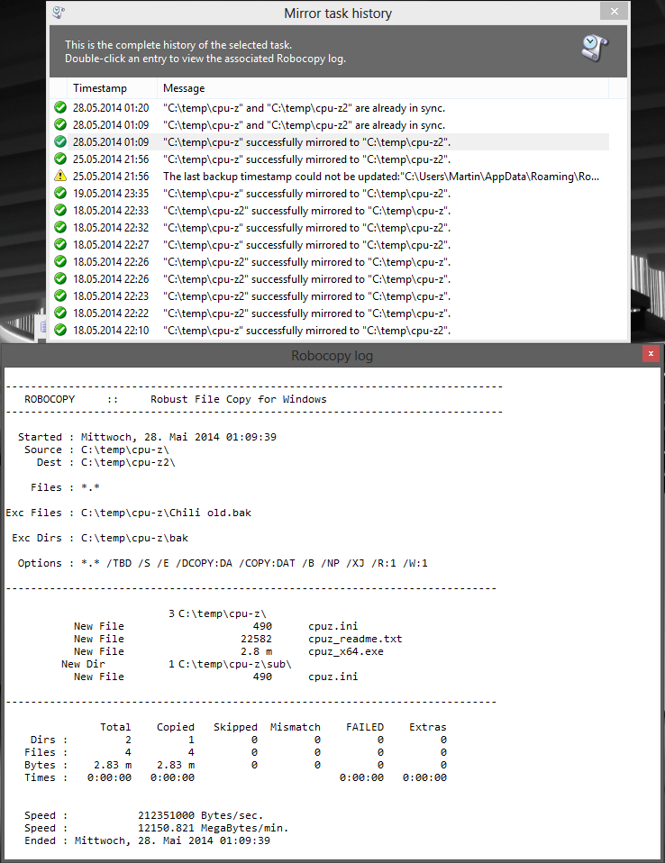

Martin Kinkelin, August 24 2014
RoboMirror is a GUI front-end for the quite popular Robocopy.exe command-line
utility for Windows.
Robocopy is shipped with Windows since Vista and available as free SDK tool for previous Windows versions (RoboMirror already includes it).
It allows to robustly synchronize two directory trees, both locally and across the network. It is therefore often used for mirroring purposes, e.g., as a powerful yet free backup utility.

RoboMirror's aim is to make Robocopy more accessible by providing a very simple and user-centered GUI, because most users simply don't want to work directly with the console or are overwhelmed by Robocopy's flexibility.
Additionally, RoboMirror supports volume shadow copies. This allows to copy files locked by running processes (Outlook, SQL Server...).
Requirements:
Windows XP/Server 2003 or newer
.NET Framework 4.0
Mirror operations queue. RoboMirror now allows you to add additional mirror operations to a queue for batch processing. You can also let RoboMirror shut the system down as soon as the queue has been processed.
Upgraded to .NET 4.0
Improved log system wrt. scalability and robustness
Volume shadow copies for all Windows versions since and including XP. RoboMirror now handles the shadow copies itself and doesn't rely on Microsoft's vshadow.exe tool anymore.
Volume shadow copies are created with VSS writer involvement to ensure a consistent state of each file
Very rough progress estimate displayed in the context menu of an operation's task tray icon
Various minor improvements as side-effects of internal code refactoring
New: Warn about mismatched items (e.g., a new file in the source tree colliding with an existing folder with the same name in the destination tree)
Extended statistics after a simulation run
Changed Last backup time stamp to Last successful operation
New Overwrite newer files option for mirror tasks. This allows for two-way synchronization, see below.
New: Power users may use custom basic Robocopy switches instead of the default ones. This makes RoboMirror very flexible!
New: If the Use a volume shadow copy option is used for a restore operation, a shadow copy of the target volume will be created.
Fix bug when selecting a root directory as source or target folder
Fix erroneous detection of files & folders to be deleted
Fix very silly bug crashing the app when the simulation run revealed no pending changes
Update dependencies (vshadow.exe to v3.0, Microsoft.Win32.TaskScheduler.dll to v2.2)
Split excluded items into excluded files and excluded subfolders with dedicated wildcards (NEW: wildcards for subfolders)
Improve UAC support: RoboMirror doesn't require administrator rights anymore, but some advanced features do, see below
Add drag & drop support for folder textboxes and excluded items
New default Robocopy switches, see below
Volume shadow copies are now created with the no-writer option
RoboMirror XML files for mirror tasks & log have been moved from %APPDATA%\RoboMirror to %LOCALAPPDATA%\RoboMirror
Scheduled tasks are created in RoboMirror subfolder for Windows Vista and newer
UI tweaks
New & improved installer based on Inno Setup
Very simple graphical interface
Simplicity was one of the primary goals as I started coding this little application when my mum asked me for a simple backup tool. I was not able to find something I was looking for, so I started this project with the aim to be as simple as possible while still providing for what most users need, e.g., performing backups of folders to external hard drives or network shares, synchronizing an MP3 player with the music folder etc.
Managing mirror tasks
RoboMirror is based on a set of mirror tasks. A mirror task consists in a source folder and a target folder.

When performing a backup, new and modified files & folders in the
source folder will be copied to the target folder.
When performing a restore operation, the operation is reversed by swapping
source and target folders, i.e., new and differing files & folders in
the target folder will be copied to the source folder.
The Overwrite newer files option controls whether newer files
in the target (restore operation: source) folder are to be overwritten by
older ones from the source (restore operation: target) folder.
Files & folders which exist in the target (restore operation: source) folder but not in the source (restore operation: target) folder, so-called extra files & folders, can optionally be deleted to create an identical mirror.
Two-way synchronization
Performing a two-way synchronization is admittedly a bit clumsy, but oversimplifying it can easily result in bad surprises.
Scenario: Both folders are to contain all files and the latest version of each file.
Overwrite newer files and
Delete extra files and folders options for the desired task.Extended NTFS attributes
Besides copying file data, attributes and time stamps, RoboMirror can also copy extended NTFS attributes, either only the access control lists (ACLs) or everything (ACLs, owner and auditing information).
Excluding files & folders
Entire subfolders, files and wildcards in the source (restore operation: target)
folder may be excluded from synchronization.
Additionally, files may be excluded by any of the common attributes (Hidden, System and Encrypted).

A wildcard excludes all matching items in the source (restore operation: target)
folder and in all of its subfolders!
Due to Robocopy limitations, wildcards cannot include any path information, e.g., \MySubfolder\*.bak is
not a valid wildcard.
Simulation run to identify the pending changes which are then presented to the user, asking for confirmation. This should prevent unpleasant surprises. ;)

Scheduling backups
Backup tasks may be scheduled on a regular basis (daily, weekly and monthly at a given time).

Scheduled RoboMirror tasks require an interactive session, so the user needs to be logged on. The tasks are scheduled such that they are executed automatically as soon as possible if a scheduled start has been missed (e.g., because the machine was powered off or the user wasn't logged on).
Tip: If a backup task is scheduled via RoboMirror running as administrator, the scheduled task will be executed as administrator and not cause any UAC prompt!
Logging and task history
All manually started and scheduled operations are logged, including the full Robocopy output. The complete history of a mirror task may be displayed for further analysis.

Volume shadow copies
By creating a temporary shadow copy of the source (restore operation: target)
volume and copying from that shadow copy, all files can be copied, including files locked by
running processes (e.g., Outlook locking its .pst files, SQL server its
databases).
This is accomplished using the handy AlphaVSS open-source library. A non-persistent shadow copy snapshot (a.k.a. System Restore point) of the source (restore operation: target) volume will be created and mounted as network share. As soon as the mirror operation is finished, the shadow copy is deleted.
Volume shadow copy to copy files locked by running processes
Robocopy backup mode /zb or /b to copy files the user has no direct access to
Copying extended NTFS owner and auditing information /copyall or /copy:datsou
In order to use these features, the user needs to be in the Backup Operators
or in the Administrators group. In the latter case, Robomirror needs
to be run as administrator if using Windows Vista or newer and UAC is enabled.
/z[b] /e /fft /r:12 /w:5 /tbd /np
Use Robocopy restartable mode (with backup mode fallback on access denied errors if RoboMirror runs with the required privileges), include empty folders, assume FAT file times (2-second granularity), 12 retry attempts with 5 seconds delay, wait for network shares to be defined, no detailed progress output.
You may modify the default switches to your liking by editing the file RoboMirror.exe.config
in the application directory (e.g., C:\Program Files\RoboMirror\RoboMirror.exe.config). It is an
XML file, open it with your favourite text editor.
In that file you may also disable the simulation run if you feel confident and want to save some seconds and a mouse click when performing a backup.